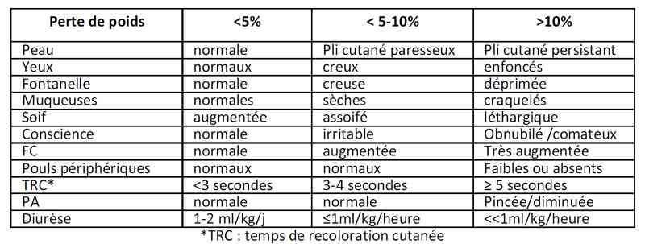
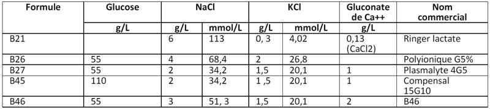

Bienvenue Sur Medical Education
Gastro-entérites aiguës de l'enfant
EnfantSpécialité : gastro-enterologie / infectieux / pédiatrie /
Points importants
-
Accélération brutale du transit avec diarrhée associée souvent à des vomissements et de la fièvre
-
Etiologie virale dans 70 à 80 % (rotavirus notamment)
-
Etiologie bactérienne 10 à 20% (Campylobacter, salmonelle, yersinia , certains colibacilles)
-
Etiologie parasitaire possible
-
Morbidité importante
-
Souvent contexte épidémique
Présentation clinique / CIMU
SIGNES FONCTIONNELS
Présentation clinique / CIMU
SIGNES FONCTIONNELS
Généraux
- Fièvre présente dans les diarrhées virales ou bactériennes (en faveur d'une infection invasive : fièvre élevée, frissons, selles glairosanglantes)
- En priorité rechercher les signes de déshydratation+++
- Estimation de la perte de poids en %
- Signes de choc hypovolémique à rechercher (tachycardie, pouls périphériques mal perçus, extrémités froides, veines plates)
Spécifiques gastro-intestinaux
- Modification brutale du transit avec selles molles ou liquides (estimer le nombre de selles et l'abondance, présence de sang dans les selles)
- Vomissements (estimer le nombre de vomissements)
- Signes de 3e secteur (ballonnement, abdomen gargouillant, perte de poids non en rapport avec les signes clinique de déshydratation)
CONTEXTE
Terrain
- Nourrisson ou enfant quelque soit l'âge
- Contexte épidémique/notion de contage
Antécédents/Facteurs de risque
- Jeune < âge 3 mois
- Prématurité
- Mauvaise compréhension familiale
- Pathologie sous-jacente
Circonstances de survenue
- Mode aigu brutal
- Transmission quasi exclusive oro-fécale
EXAMEN CLINIQUE
- Pratiquer un examen clinique complet
-
Evaluer la sévérité de la déshydratation :
- apathie de l'enfant
- yeux enfoncés
- pli cutané
- sécheresse de la bouche
 _256 Photo Evaluation de la sévérité de la déshydratation
-
Examen abdominal :
- signes de troisième secteur (ballonnement, gargouillement, perte de poids non en rapport avec les signes clinique de déshydratation)
-
Examen ORL et pulmonaire :
- recherche de signes d'infection extradigestive
-
Autres signes :
- fièvre si très élevée ou mal tolérée en faveur d'une infection invasive
Signes paracliniques
BIOLOGIQUE
-
Ionogramme :
-
hypo-hypernatrémie, hypokaliémie, insuffisance rénale
-
Gaz du sang (acidose métabolique)
-
NFS (hyperleucocytose voire leucopénie)
-
En pratique :
-
perte de poids < 5% => ionogramme sanguin inutile
-
perte de poids entre 5-10% => ionogramme sanguin ± utile
-
perte de poids > 10% => ionogramme sanguin ± gaz du sang
-
diarrhée glairosanglante : NFS, CRP, hémoculture si fièvre
-
diarrhée de retour + parasitologie des selles sur 3 jours
Diagnostic étiologique
-
Etiologie virale dans 70 à 80% (rotavirus notamment)
-
Etiologie bactérienne 10 à 20% (Campylobacter, salmonelle, yersinia, certains colibacilles)
-
Etiologie parasitaire possible (voyage)
Diagnostic différentiel
- hypo-hypernatrémie, hypokaliémie, insuffisance rénale
- perte de poids < 5% => ionogramme sanguin inutile
- perte de poids entre 5-10% => ionogramme sanguin ± utile
- perte de poids > 10% => ionogramme sanguin ± gaz du sang
- diarrhée glairosanglante : NFS, CRP, hémoculture si fièvre
- diarrhée de retour + parasitologie des selles sur 3 jours
Diagnostic étiologique
- Etiologie virale dans 70 à 80% (rotavirus notamment)
- Etiologie bactérienne 10 à 20% (Campylobacter, salmonelle, yersinia, certains colibacilles)
-
Etiologie parasitaire possible (voyage)
Diagnostic différentiel
Autres causes de diarrhée
- Infections extradigestives (ORL, pulmonaire, pyélonéphrite)
- SHU
- Intolérance aux protéines du lait de vache
- Diarrhées néonatales
- Hépatite A
- Diarrhée chronique > 15 jours d'évolution
- Rectocolite hémorragique
Traitement
TRAITEMENT PREHOSPITALIER/INTRAHOSPITALIER
Si choc hémorragique
-
Remplissage vasculaire :
- bolus de 20 mL/kg de serum physiologique NaCl à 0,9% x 3 si nécessaire
- si non amélioration après 2-3 bolus ; prévenir le réanimateur
Si absence de choc
- Perte de poids < 5% : réhydratation orale
- Perte de poids 5-10% : réhydratation orale ou IV
- Perte de poids > 10% : réhydratation IV
-
Modalités de la réhydratation orale :
- une dysnatrémie modérée ne contre-indique pas la réhydratation orale
- soluté de réhydratation orale (SRO) : 1 sachet dans 200 mL d'eau
-
apports fréquents et par petites quantités :
- si vomissements, donner à boire ~ 5 mL toutes les 5 min. pendant 1 à 2 heures
- sinon, commencer par 1mL/kg toutes les 15 min (une cuillère à café = 7 mL) - puis élargir progressivement pour donner ~ 30 mL/kg en 4 à 6 heures
- après 6h (selon tolérance) réalimenter (le SRO n'est pas un aliment)
- ne pas arrêter l'alimentation au sein qui peut alterner avec le SRO
- si l'enfant (> 24 mois) en cas de refus du SRO, essai de sodas dégazéifiés et de petits pots pomme-banane
-
Reprise de l'alimentation :
- < 3 mois : hydrolysat de protéines (Peptijunior®) pendant 7-10 jours
- > 3 mois et diarrhée de courte durée : lait maternisé habituel
- > 3 mois et diarrhée prolongée ou mal tolérée : lait sans lactose (AL 110®, Diargal®)
- > 4 à 6 mois : alimentation diversifiée
-
Modalités de la réhydratation intraveineuse :
- en cas de difficulté à perfuser l'enfant et en l'absence de vomissements, ne pas oublier la possibilité de gavage gastrique continu : SRO 150 à 200 mL/kg/j (sonde adaptée au poids)
- ne pas donner de SRO en même temps que la perfusion : repos digestif 4 à 6 heures
- surveiller la reprise de la diurèse et repeser le lendemain matin
-
volume à perfuser selon l'âge :
- < 1 mois : 180-200 mL/kg/24h
- 1-24 mois : 150 mL/kg/24h
- 2-4 ans : 100-120 mL/kg/24h
- 4-6 ans : 80-100 mL/kg/24h
- 6-10 ans : 60-80 mL/kg/24h
- >10 ans : 60 mL/kg/24h
-
Soluté hydro-électrolytique à employer : débuter par du B46, puis selon la natrémie :
-
hypernatrémie :
- < 150 mmol/L : soluté B 46 (3 g NaCl/L)
- > 150 mmol/L : soluté B 26 (4 g NaCl/L) ou polvionique G5
- > 170 mmol/L : soluté B 26 + 1 g NaCl/L (5g NaCl/L) (et transfert dans l'Unité de Surveillance Continue)
- objectif : correction lente de la natrémie avec une diminution d'environ 0,5 mmol/L/h, pour éviter les complications neurologiques (hématome sous-dural, thrombose veineuse)
- non reprise de la diurèse malgré une reprise de poids : G5 % + NaCl 60 mmol/L + Gluconate Ca++ 10% 20 ml/L, appeler la Réanimation
-
hyponatrémie :
- < 130 mmol/L et non symptomatique : B26 (4 g NaCl/L)
- < 125 mmol/L et symptomatique (convulsions, trouble de conscience)
- remonter rapidement la natrémie de 5 à 7 mmol/L (faire cesser les convulsions) par l'injection de 3-4 mL/kg de NaCl 5,85% (1m L= 1mmol) en 5 min
- puis correction lente de la natrémie avec une remontée d'environ 0,5 mmol/L/h, pour éviter les complications neurologiques (myélinose centro-pontine)
-
hypokaliémie : < 3 mmol/L :
- ajouter 1 à 2 mmol/kg dans la perfusion prévue pour 24 heures
- utiliser du KCl 7,46%(1mL = 1mmol/L)
- acidose métabolique par perte fécale de bicarbonate : la perfusion de bicarbonate est inutile
- hyperglycémie : faire une BU pour éliminer un diabète insulinodépendant
-
hypernatrémie :
MEDICAMENTS
Place très réduite, ne pas insister si vomissements
- Antisécrétoire : racécadotril (Tiorfan®)
- < 9 kg : 1 sachet 10 mg x 3/24h
- 9 à 13 kg : 2 sachets 10 mg x 3/j
- 13 à 27Kg => 1 sachet 30 mg x 3/j. Maximum 5 jours
Anti-émétique
- Métoclopramide (Primpéran®)
- Dompéridone (Motilium®)
- Métopimazine (Vogalène®) : pas d'indication, source d'effets indésirables
Médicaments contre-indiqués
- lopéramide (Imodium®): formellement contre-indiqué < 2 ans
- AINS (Nureflex®, Advil®) : contre-indiqués en cas de déshydratation, leur emploi doit rester exceptionnel même après correction de la déshydratation
En première intention en cas de diarrhée glairo-sanglante fébrile chez l'enfant < 6 mois, ou avec un syndrome infectieux sévère ou drépanocytaire ou coproculture positive à shigelle ou salmonelle+fièvre élevée
- Ceftriaxone (Rocéphine®) 50 mg/kg/j x 3 jours
Solutés disponibles
 _257 Tableau Solutés de réhydratation
- 150 mL/kg/24h de B46 apporte 7,5 mEq/kg/24h de Na+, 3 mEq/kg/24h de K+
- 150 mL/kg/24h de B26 apporte 10 mEq/kg/24h de Na+, 3 mEq/kg/24h de K+
- Ampoule 10 mL NaCl 5,85% (1mL=1mmol) 1g NaCl = 17,1 mmol
- Ampoule 10mL KCl 7,46% (1mL=1mmol) 1g KCl = 13,4 mmol
- Ampoule 10mL Gluconate Ca 10% (90mg Ca++)
Surveillance
CLINIQUE
-
FC, PA, FR, Température/4 heures
-
Selles, vomissements
-
Poids/12 heures
PARACLINIQUE
-
Ionogramme sanguin à H6 si natrémie > 150 ou < 130 mmol/L
Devenir / orientation
CRITERES D'ADMISSION
Devenir / orientation
CRITERES D'ADMISSION
Réanimation
- Choc hypovolémique ne répondant pas à 2 remplissages
- Si natrémie > 170mmol/L ou absence de reprise de la diurèse
Service d'hospitalisation
- Enfant déshydraté
- Diarrhée profuse
- Très jeune nourrisson
- Echec d'une prise en charge au domicile et/ou surveillance inadéquate
CRITERES DE SORTIE
- Succès de la réhydratation orale
- Débit de selles acceptable
- Arrêt des vomissements
- Fièvre bien tolérée
- Correction des signes de déshydratation
- Milieu familial fiable pour poursuite des soins
ORDONNANCE DE SORTIE
Réhydratation orale SRO jusqu'à H4 -H6
Reprise de l'alimentation
- < 3 mois : hydrolysat de protéines (Peptijunior®) pendant 7-10 jours
- > 3 mois et diarrhée de courte durée : lait maternisé habituel
- > 3 mois et diarrhée prolongée ou mal tolérée : lait sans lactose (AL 110®, Diargal®)
- 4 à 6 mois : alimentation diversifiée
Antisécrétoire : racécadotril (Tiorfan®)
- < 9 kg: 1 sachet 10 mg x 3/24h
- 9 à 13 kg: 2 sachets 10 mg x 3/j
- 13 à 27 kg => 1 sachet 30 mg x 3/j
- Maximum 5 jours
RECOMMANDATIONS DE SORTIE
- Mesures d'hygiène (lavage des mains +++)
- Attention au très jeune nourrisson dans l'entourage (vaccination contre le rotavirus à proposer)
- Ne pas hésiter à reconsulter si persistance des signes
Bibliographie
-
Spandorfer PR et al. Oral versus intravenous rehydration of moderately dehydrated children: a randomized, controlled trial. Pediatrics 2005; 115:295-301
-
Adrogué HJ, Madias NE. Hypernatremia. N Engl J Med 2000; 342:1493-9
-
Adrogué HJ, Madias NE. Hyponatremia. N Engl J Med 2000; 342:1581-9
-
Cézard JP et al. Efficacity and tolerability of racecadotril in acute diarrhea in children. Gastroenterology 2001 ; 120 :789-805
Auteur(s) : François ANGOULVANT, Jean-Christophe MERCIER